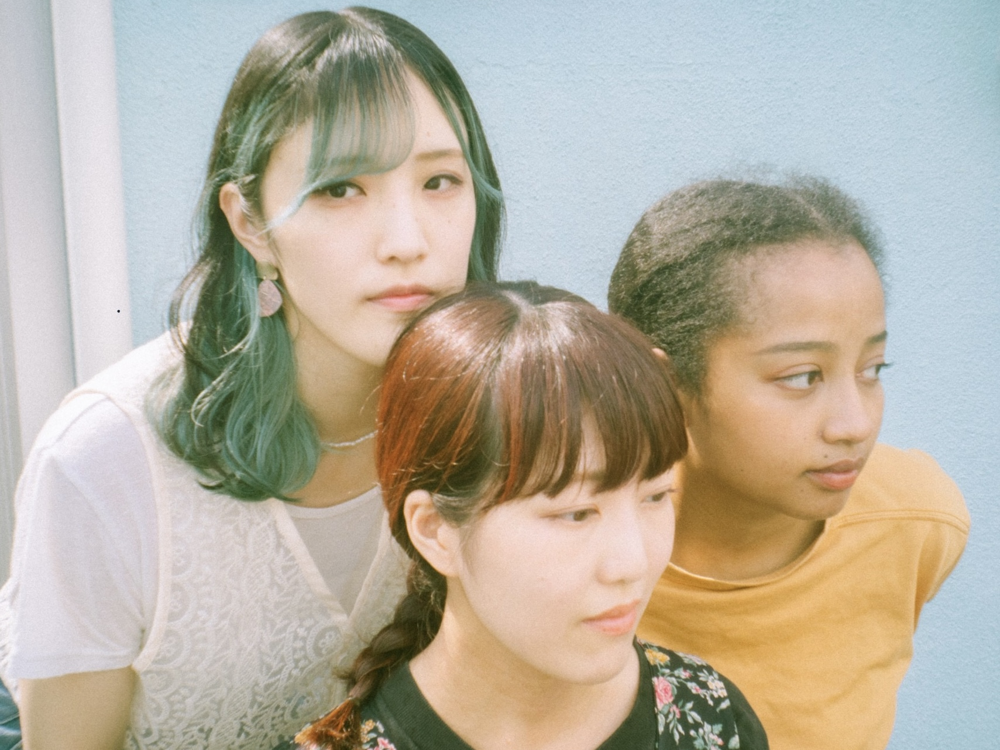
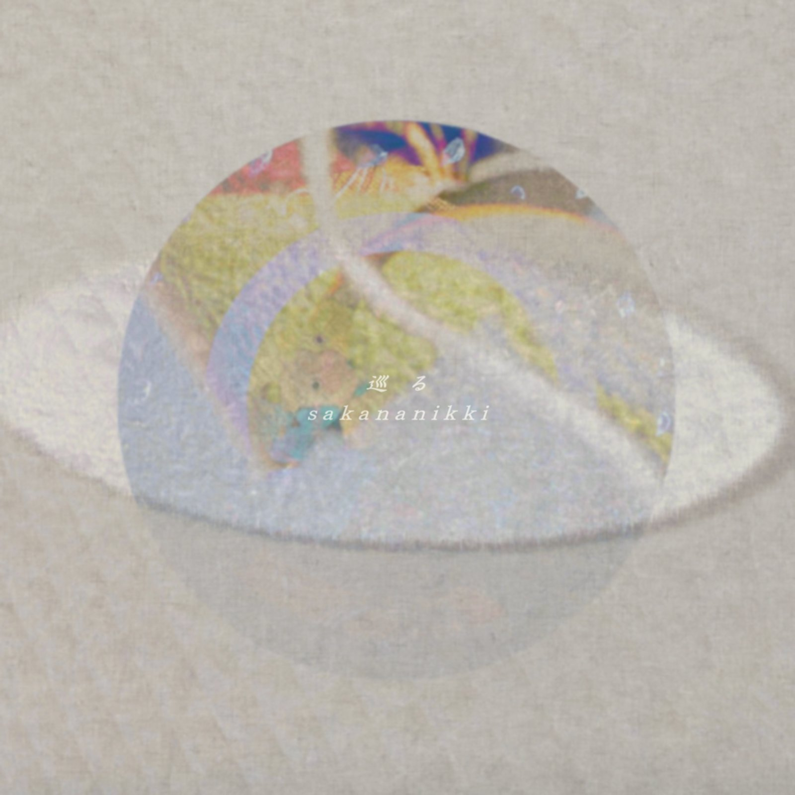
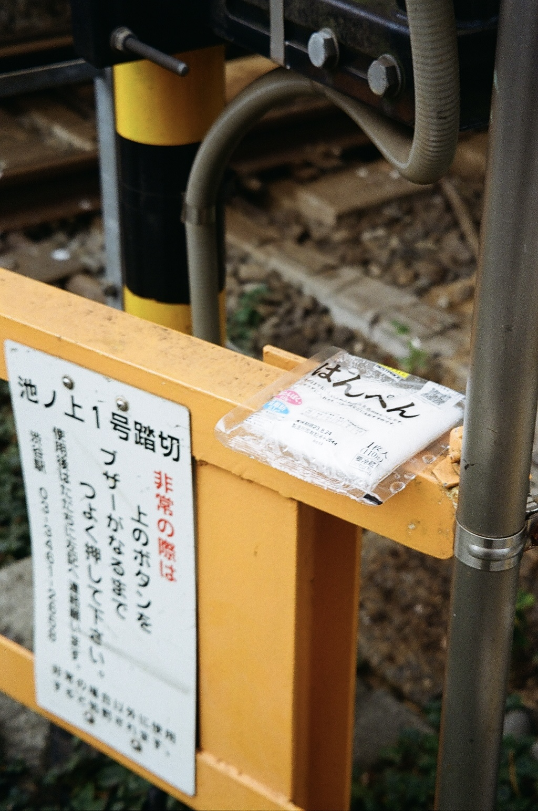
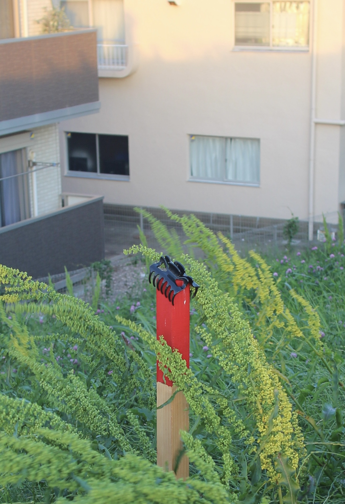
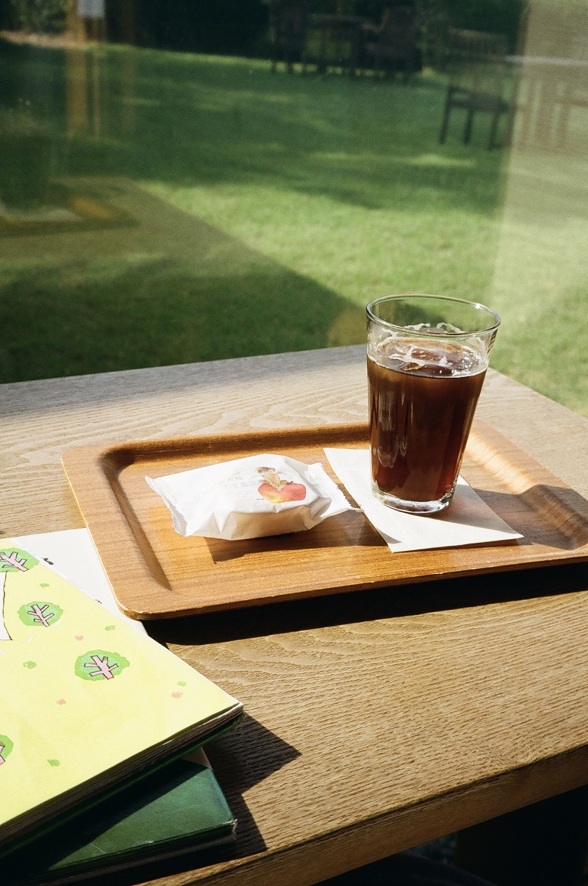
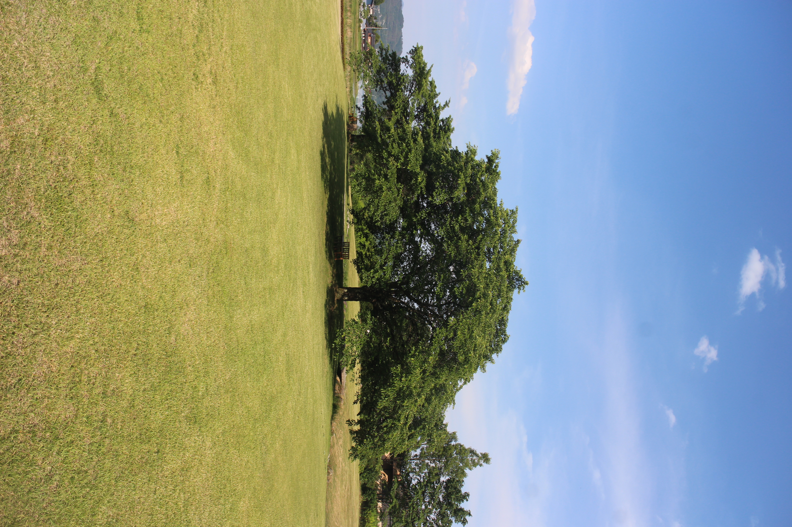

interview
さかな日記 ごとうかな — 「後悔したくない一心でステージに立つことを決め」

自己紹介をお願いします。
さかな日記という3ピースバンドでギターボーカルをしてます、ごとうかなです。
音楽を始めたきっかけがあれば、教えてください。
専門学校を早々に辞めてしまったこと、高校生の頃からバンドに憧れていたこと、ライブを見に行くことが趣味になったこと、そこで知った音楽やライブの力、職場の先輩に背中を押してもらってInstagramに弾き語りカバーを投稿するようになったこと、そしてその界隈の中で挫折したこと、そして最後の光に見えたコレサワさんのカバーオーディションで初めてステージに立ったこと。
でもそれで人生が変わるはずもなかった事。そして凄く悔しかったこと。自分で曲を作って自分で歌うことをせずに嘆くのは違うと思ったこと。自分の人生は長くない気がしていたこと。
後悔したくない一心でステージに立つことを決め、そこから曲作りを始めてシンガーソングライターとしての活動が始まりました。メンバーのみあ・アイミとは同じくホームにしていた湘南bitで出会い、店長からのお声がけでバンドを組むことになりました。
長文で凄いことになってしまいましたが、どれか一つでも欠けていたら活動には至っていない気がしています。
でもそれで人生が変わるはずもなかった事。そして凄く悔しかったこと。自分で曲を作って自分で歌うことをせずに嘆くのは違うと思ったこと。自分の人生は長くない気がしていたこと。
後悔したくない一心でステージに立つことを決め、そこから曲作りを始めてシンガーソングライターとしての活動が始まりました。メンバーのみあ・アイミとは同じくホームにしていた湘南bitで出会い、店長からのお声がけでバンドを組むことになりました。
長文で凄いことになってしまいましたが、どれか一つでも欠けていたら活動には至っていない気がしています。
直近のリリースについて教えて下さい。
巡るe.p に入っている「record of sorrows」は部屋の隅の床で体育座りしてしまうくらいの状況だった私を何とか表現に変えてtumblerに書き留めていたものから作りました。その詩にメロディーがつかなかったので結果的にポエトリーになったという感じですが、ポエトリーの曲は大好きです。小学生の頃から朗読が好きだったことを思い出しました。（国語の授業の音読はだいっきらいでしたが）

▷ Listenコレクションしているものってありますか？
誰かが落としてしまった"おとしもの"や良い瞬間を見つけて(出来れば)写真に収めることが趣味です。
はたらくぬいぐるみや住宅街にあるキュートなもの、田舎のお庭などなど。良いものを見つけるとテンション上がりますし逆に自分より良いものを見つけている人がいると悔しくもなります。
はたらくぬいぐるみや住宅街にあるキュートなもの、田舎のお庭などなど。良いものを見つけるとテンション上がりますし逆に自分より良いものを見つけている人がいると悔しくもなります。


旅をして、また行きたいと思えた街(場所)について教えてください。
初めての一人旅で行った長野県安曇野にある「安曇野ちひろ美術館」です。
前回行った時は外の草原に思いのほか時間を使ってしまったので次は1日時間をとりたくさん絵本を読みたいなと思います。
最寄りのレンタルサイクリングでかりた自転車で見渡す限りの田園風景と山々を眺めながら向かう道中も本当に最高でした！
前回行った時は外の草原に思いのほか時間を使ってしまったので次は1日時間をとりたくさん絵本を読みたいなと思います。
最寄りのレンタルサイクリングでかりた自転車で見渡す限りの田園風景と山々を眺めながら向かう道中も本当に最高でした！


さかな日記